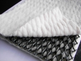

网站首页
|
企业简介
|
产品展示
|
新闻中心
|
销售理念
|
企业荣誉
|
技术资料
|
联系我们
产品展示:
热门产品:
复合排水网，
止水条，
复合土工膜，
经编涤纶土工格栅，
钢塑复合土工格栅，

复合排水网
复合排水网
复合排水网
复合排水网
复合排水网
复合排水网
复合排水网
复合排水网
复合排水网
复合排水网
复合排水网
复合排水网
复合排水网
复合排水网
复合排水网
复合排水网
复合排水网
复合排水网
复合排水网
复合排水网
产品导航：
土工布,
土工膜(复合土工膜,HDPE土工膜),
土工格室,
土工格栅,
土工网,
排水,
膨润防水毯,
止水,
工程纤维,
防水板,
【查看详细介绍】
土工布系列
土工膜（复合土工膜，HDPE土工膜）系列
土工格室系列
土工格栅系列
土工网系列
排水系列
鹏润防水毯系列
止水系列
工程纤维系列
防水板系列
德州中瑞土工材料工程有限公司
总经理手机：13181363048
总经理手机：15166903176
办公室电话：0534-8266589
厂址：山东省陵县来凤街12号
[新闻中心]
土工膜的施工方法：
[土工布技术]
土工膜在生产过程中
[土膜布技术]
HDPE土工膜的主要机理
[土工布技术]
HDPE防渗膜在1960年首
[土工布技术]
复合土工膜施工工艺原
[土工膜技术]
复合土工膜施工工艺流
[土工布技术]
复合土工膜的施工准备
[新闻中心]
复合土工膜的铺设方法
公司简介
专业的土工材料
复合土工膜，
土工布，
hdpe土工膜
生产提供商
德州中瑞土工材料工程有限公司是一家集研发、生产、销售及售后服务为一体的高新技术企业， 主营土工膜，复合土工膜，HDPE土工膜，，糙面土工膜，土工格栅，防水板等各种产品， 公司成立于2009年，总资产为1.5亿，占地150亩，现有职工300人，各类技术人员150人。公司地处全国土工合成材料专业生产基地－德州陵县。 紧靠京沪高速铁路，京福高速公路，104国道，毗邻青岛，烟台，天津三大水运港口，拥有得天独厚的地理条件，交通十分便利。